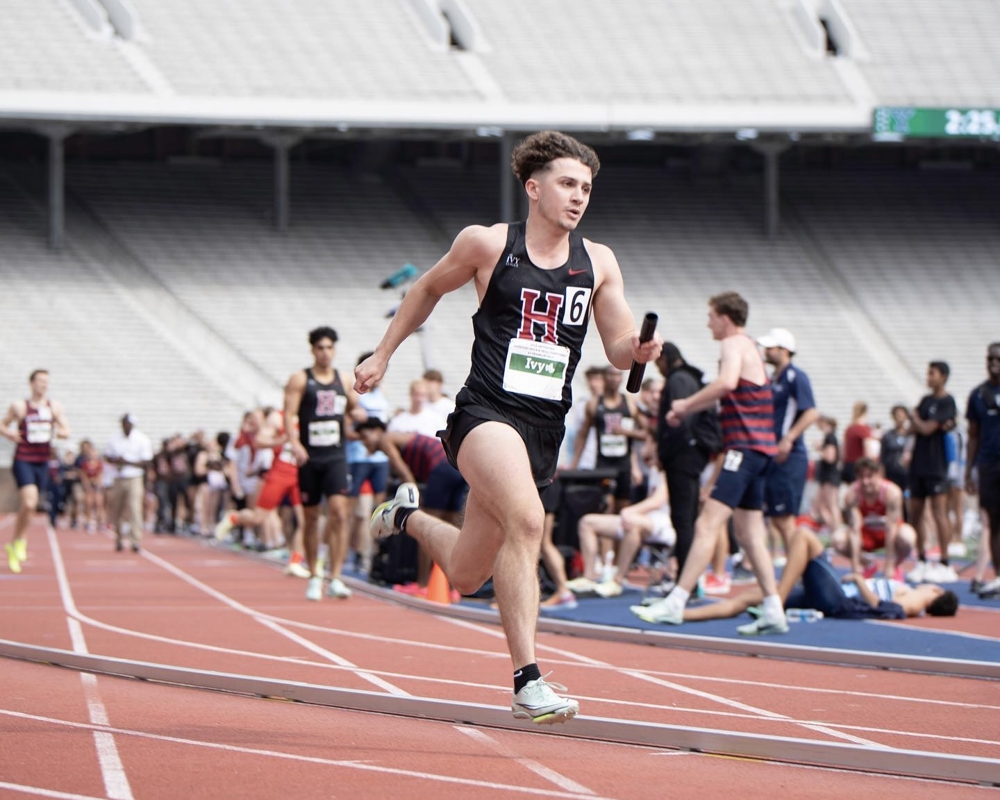
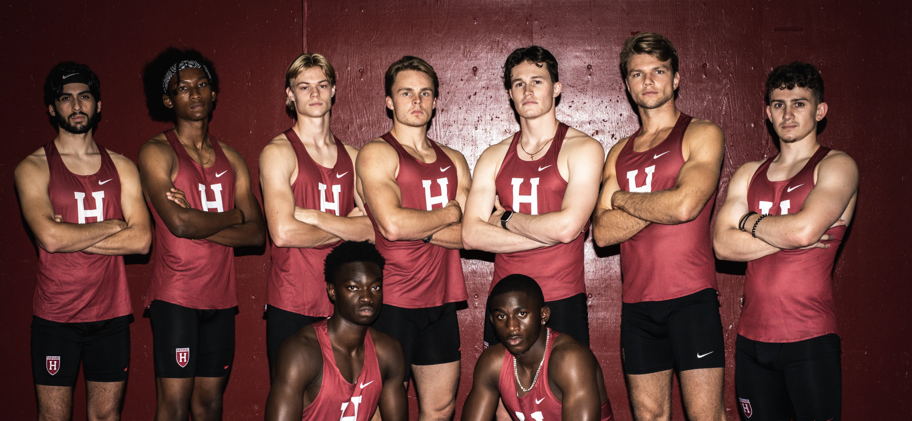
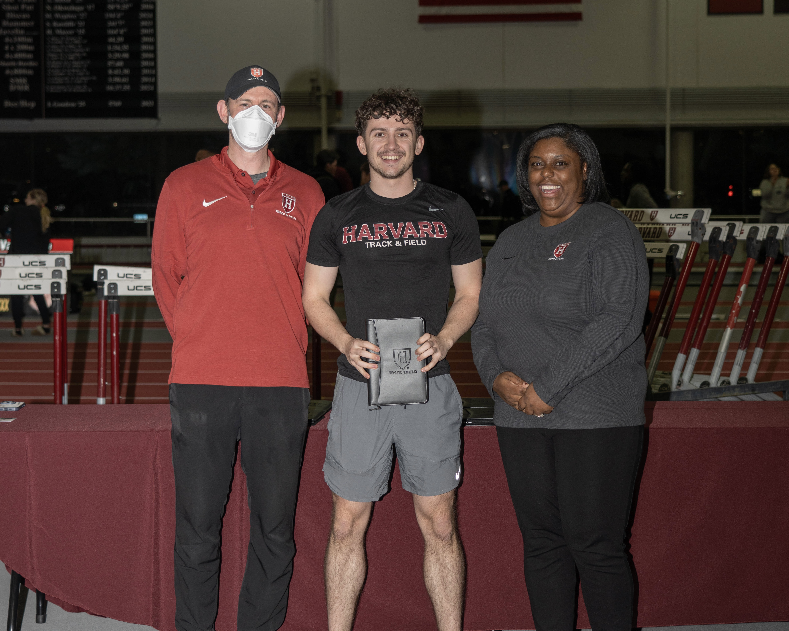

Gallery
IMAGES



International 400m sprinter — 46.7s personal best. Harvard Varsity athlete training 25+ hours per week alongside a full engineering degree. Represented Wales internationally.

Competed as a varsity Track & Field athlete at Harvard University, specialising in the 400-metre sprint. Represented Wales internationally and trained over 25 hours per week while maintaining full-time engineering studies.
Trained 25+ hours per week for four years under the Harvard coaching staff, combining sprint mechanics work, lactate threshold development, and race-specific conditioning. Nutrition, recovery protocols, and biomechanical analysis were core components of the performance programme.
Competed at varsity level in the 400m and relay events, including the Ivy League Championships. Represented Wales internationally, racing against athletes from national programmes across multiple competitions.
Managed the demands of a Division I athletics programme alongside a full engineering course load at Harvard. The discipline and time management developed through this dual commitment directly shaped my approach to high-stakes, deadline-driven engineering work. The resilience of elite sport — dealing with setbacks, training through adversity, and performing under pressure — is something I carry into every professional challenge.
Gallery


Links